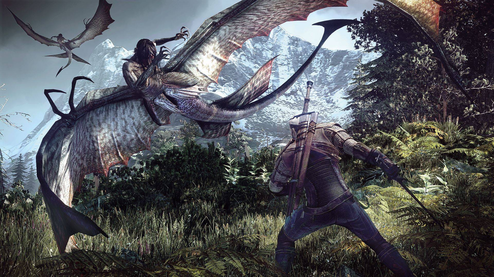
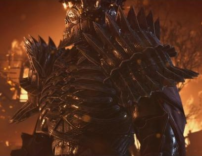
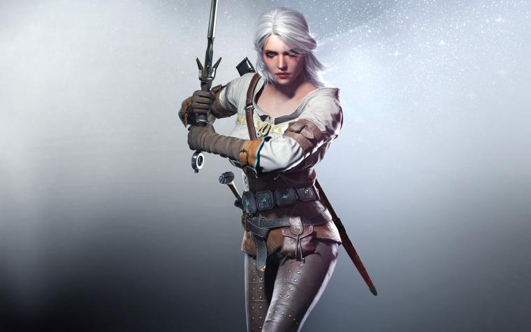
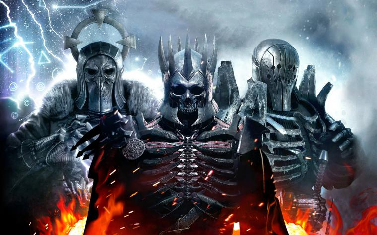

The Witcher 3 is widely regarded as one of the best role-playing games (RPGs) of all time. Thinking
about my experience with the game, I would overwhelmingly agree. This game contains everything that RPG
fans love: sword-fighting, magic, monsters, spells, beautiful women, buff-and-tough dudes, allies, enemies,
and a deep and expansive lore. In the Witcher 3, you play mostly as Geralt of Rivia, a well-regarded and
well-known witcher.
Witchers are the hired killers of monsters. If you have an estate or oversee a town and your residents
suddenly start disappearing or being gruesomely killed, you will rightfully assume that some sort of
monster is prowling about. That is when you call for a witcher. For a sum, they will track, hunt, and
kill this predator or die trying. A witcher never works for free. Witchers carry two blades: one steel,
and one silver. The steel blade is used to battle other humans or
animals. The silver blade is used for the monsters because silver is the only element that can cause
significant harm to them.

Witchers are the hired killers of monsters. If you have an estate or oversee a town and your residents
suddenly start disappearing or being gruesomely killed, you will rightfully assume that some sort of
monster is prowling about. That is when you call for a witcher. For a sum, they will track, hunt, and
kill this predator or die trying. A witcher never works for free. Witchers carry two blades: one steel,
and one silver. The steel blade is used to battle other humans or
animals. The silver blade is used for the monsters because silver is the only element that can cause
significant harm to them.


The process to becoming a witcher takes many years. During this process, candidates must drink various
poisons that over time are meant to alter their genetic makeup. This is necessary because it gives the
candidate special powers for tracking creatures and the ability to perform various spells.
The physical training is also quite lethal. Candidates are often killed, if not from the poisons, then
from the hunt. Witcher candidates are often dumped alone in the middle of the wild to fight and kill a
monster. They either survive and make it back to the castle, or they do not.
Only the finest candidates survive to become a witcher. Normally only one or two out of ten survive training.
By the end of training, the candidate`s genetic makeup is altered to the point where they are no longer
considered human. The potions witchers drink are poisonous and will kill anyone but a witcher.
Witchers are not well-regarded by humans. Calling one is a last resort. They are thought of as soulless
and that they have no feelings or empathy. Their goal is money and money alone.
